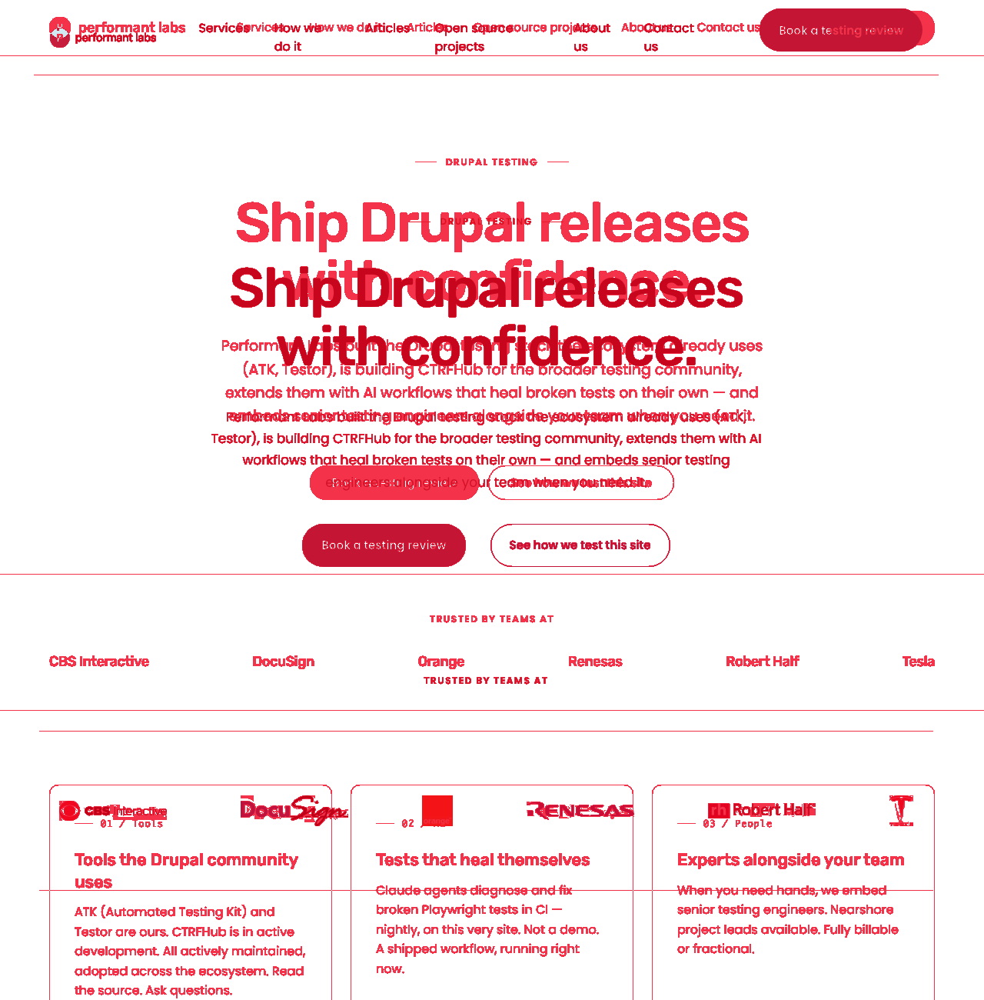
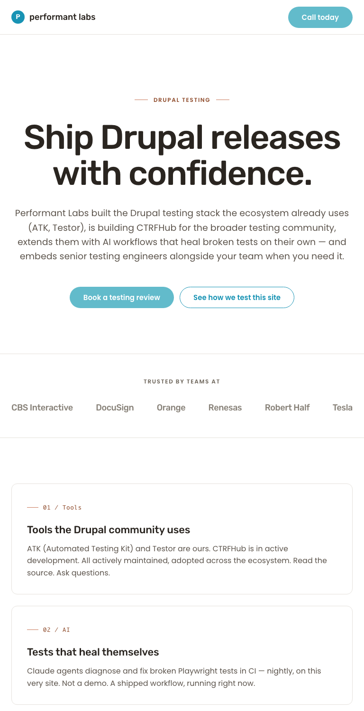
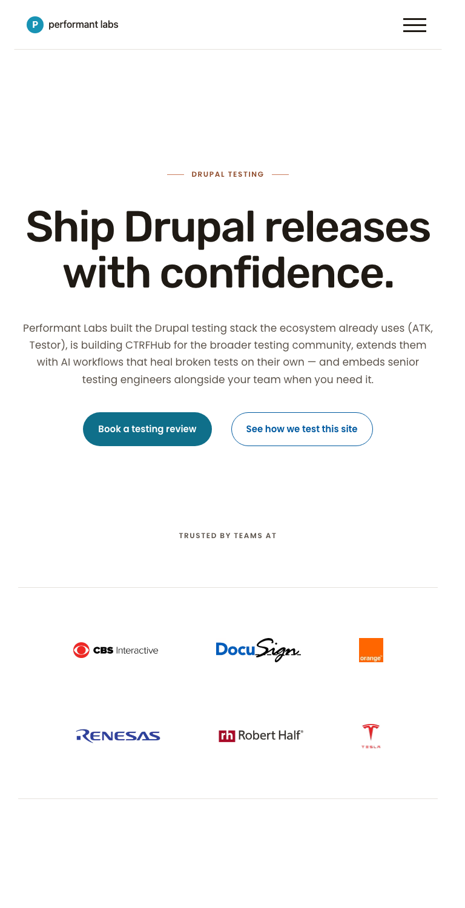
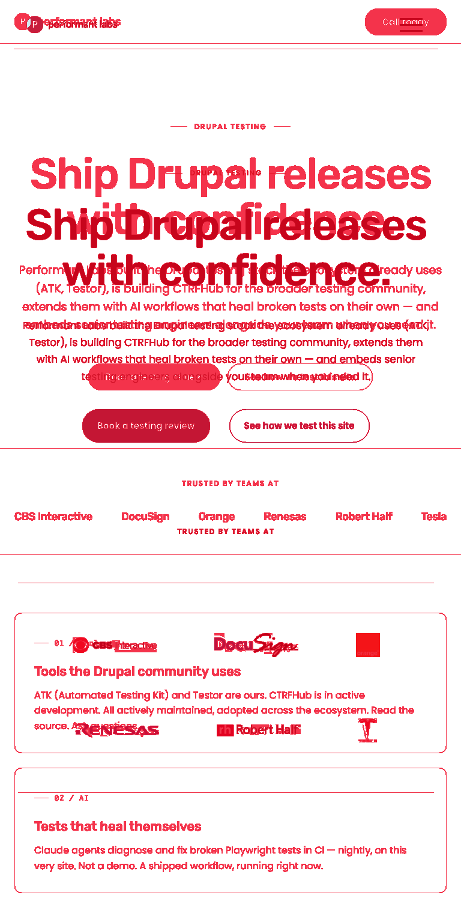
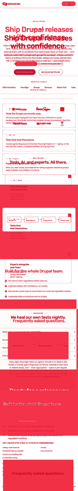
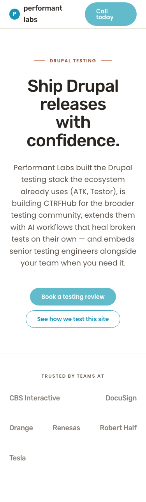
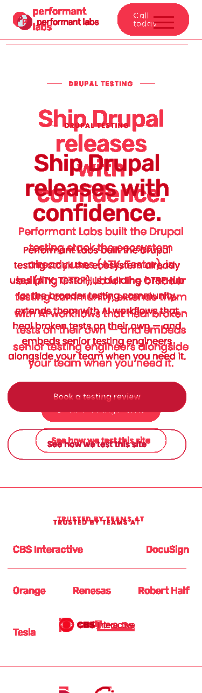
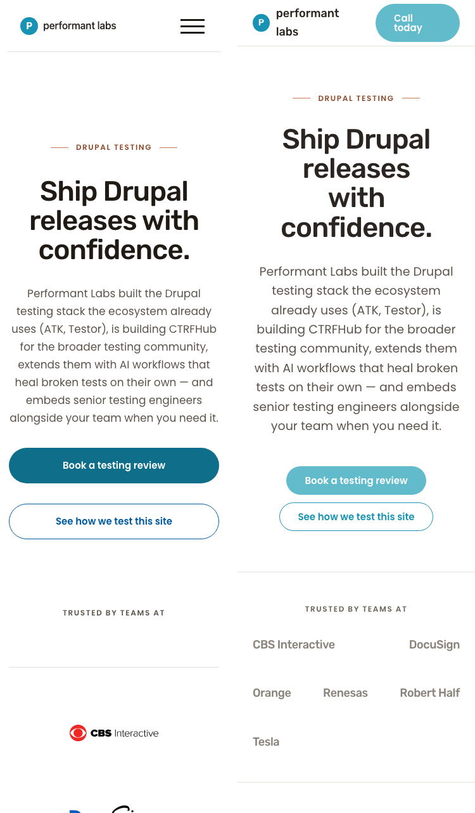
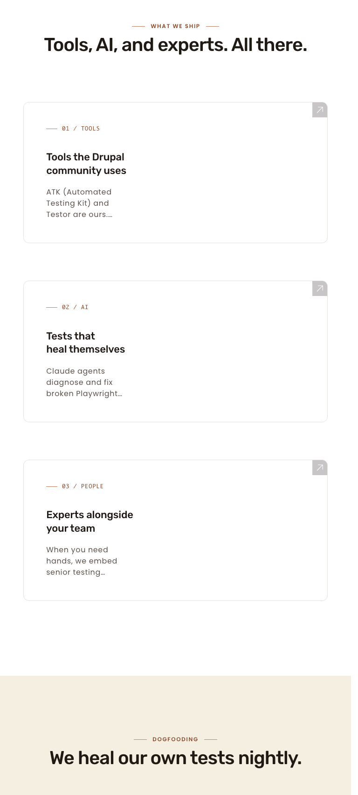

Headline metric for this sub-cycle is the CTA-to-next-band gap, measured directly from the live and preview DOM via Playwright:
| Viewport | Live CTA→band gap | Preview CTA→band gap | Match | Live hero height | Preview hero height |
|---|---|---|---|---|---|
| 1280 | 96 px | 96 px | YES | 672.58 px | 672.84 px |
| 768 | 96 px | 96 px | YES | 672.58 px | 672.84 px |
| 375 | 64 px | 64 px | YES | 752.53 px | 827.36 px |
CTA-to-next-band gap matches preview at all three viewports. Hero heights at 1280 and 768 are within 0.3 px of preview. At 375, live hero is shorter than preview because live's secondary CTA stacks more compactly than the preview's button rendering — this is downstream of CTA component styling (which is preview-aligned in earlier phases) and not an artifact of 8.5's spacing change.
The hero+logo crop pixel-deltas are inflated by content that lies in scope for other sub-cycles (header bar, logo presentation, hero background image) — see "What I see different" below. None of those deltas reflect a regression in 8.5 work.
var(--space-3xl) token in the preview.Drag the slider to wipe between live (left) and preview (right). Position 0 = all live; position 100 = all preview.

ImageMagick diff (red = differing pixels). Concentrated red regions: header band (live header taller than preview), hero CTAs (button styling differs), logo row (real images vs text labels). The CTA-to-label gap area is uniform — no concentrated red there.
Side-by-side: live (left) | preview (right). CTA-to-label spacing visually matches between the two.
Whole-page AE = 2,836,900 / 5,556,480 = 51.06%. Inflated by header height, FAQ section, and footer CTA differences (out of scope for 8.5).
Drag the slider to wipe between live (left) and preview (right).



Diff at 768. Red is concentrated on the header (different layout) and the logo grid (live wraps to 2 rows of 3; preview shows text labels in one row of 6). Hero spacing area is clean.
Side-by-side at 768. Hero CTA-to-label gap reads as matching on both renders.

Whole-page AE = 1,594,890 / 3,708,672 = 43.00%.
Drag to wipe between live (left) and preview (right).


Diff at 375. Red regions: header layout differs, headline wraps differently (live: 4 lines; preview: 4 lines but at slightly different cadence due to font metrics), logo presentation. Spacing transitions are clean.

Side-by-side at 375. CTA-to-label gap is 64 px on both — matches preview's mobile target.
Whole-page AE = 1,058,890 / 2,312,250 = 45.79%.
Phase 8.4 set the homepage feature-card grid to grid-wrapper--3col-stack-md: 3 columns
at ≥1280, 1 column at 768 and 375. Confirming that 8.5's spacing change does not affect this.
| Check | Expected | Measured | Result |
|---|---|---|---|
| Feature card count at 768 | 3 | 3 (h3 tops at y=1828, 2210, 2593) | PASS |
| Distinct vertical positions | 3 (1-col stack) | 3 | PASS |
| Card width at 768 | ~viewport-internal width | ~693 px (full container width) | PASS |

Live homepage at 768: three feature cards stacked vertically. 1-col layout confirmed; no regression.
| Section | Viewport | Status | Description | Crop |
|---|---|---|---|---|
| Hero band — CTA→band transition (8.5 target) | 1280 | MATCH | CTA-to-label gap = 96 px on both. Excess whitespace eliminated. | |
| Hero band — CTA→band transition (8.5 target) | 768 | MATCH | CTA-to-label gap = 96 px on both. | |
| Hero band — CTA→band transition (8.5 target) | 375 | MATCH | CTA-to-label gap = 64 px on both. Mobile --space-3xl matched. |
|
| Logo band — top transition (8.5 target) | 1280 / 768 / 375 | MATCH | .dy-section:has(.logo-grid) padding-top 80→48 px and header margin-bottom 80→32 px applied via sibling combinator. Logo band starts immediately below hero with no extra gap. |
|
| Feature cards — 1-col at 768 (8.4 regression check) | 768 | MATCH | 3 cards stacked vertically; no regression from 8.4. | |
| Header (out of scope — 8.1) | all | OUT-OF-SCOPE | Live header is ~160 px tall with full nav; preview is ~73 px with "Call today" button. Belongs to a different sub-cycle. | — |
| Logo presentation (out of scope — 8.6) | all | OUT-OF-SCOPE | Live shows logo images; preview shows text labels. Belongs to a logo-rendering sub-cycle. | — |
| Hero background image (out of scope) | all | OUT-OF-SCOPE | Live carries a background-image inside the hero band; preview is flat white. Cosmetic difference, not spacing. | — |
| FAQ icons / footer CTA / footer casing (out of scope — 8.3) | all | OUT-OF-SCOPE | Below the hero+logo-band region. Drives whole-page delta but not in 8.5 scope. | — |
None — verdict is PASS for sub-cycle 8.5. No reworks required.
The header (8.1), FAQ + footer CTA + footer casing (8.3), and logo presentation (8.6) remain visibly different from preview but are tracked under separate sub-cycles. They are expected to surface in subsequent audits.